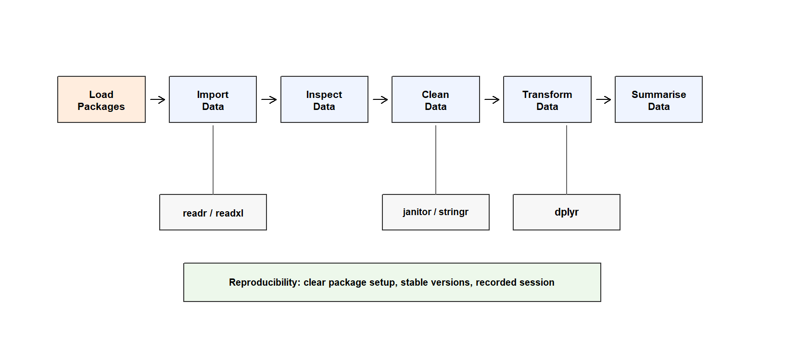

Code
library(dplyr)
library(readr)
library(ggplot2)Leo has just finished Part 2 with a new kind of confidence.
R no longer looks like a wall of strange symbols. He can read code as structured meaning. He knows that operators help R calculate, compare, assign, extract, and decide. He knows that built-in functions are ready-made actions. He has learned to write small functions of his own when repeated code starts to feel like a warning sign. He has also learned that errors are not signs of failure. They are signals that help him find where the conversation between his code and R has broken down.
For a moment, it feels as if base R might be enough.
Then he opens a real data analysis tutorial and sees this near the top:
library(dplyr)
library(readr)
library(ggplot2)A few lines later, he sees something like this:
df_r_migration |>
filter(project_score >= 80) |>
summarise(mean_hours = mean(study_hours, na.rm = TRUE))Leo pauses.
He recognises parts of the code. He knows the pipe. He knows the comparison operator. He knows mean(). He can guess that the code is selecting learners with strong project scores and calculating their average study hours.
But something has changed.
Some of these tools do not come from base R. They come from packages.
This is the doorway into Part 3.
Part 1 helped Leo make first contact with R. Part 2 helped him understand how R thinks and speaks. Part 3 now moves him into workflow: the organised sequence of actions that turns raw data into trustworthy analysis.
Leo’s next lesson is not simply how to install packages. That would be too small.
The deeper lesson is this:
Leo does not only need to know R. He needs to know how R gains new tools without losing workflow control.
Packages are not mysterious add-ons. They are purposeful extensions of R. But reproducible analysis depends on knowing which tools are being used, where they come from, when they enter the workflow, and why they are needed.
That is where real R work begins to feel less like typing commands and more like building a dependable system.
In this chapter, Leo will learn:
package::function() for clarity;This chapter does not teach data importing, cleaning, transformation, or summarising in full. Those begin in the next chapters. Here, Leo learns how the tools of the R ecosystem enter the worksite.
Part 3 is the point where Leo’s R learning changes shape.
Until now, many examples have been small. A value here. A vector there. A function call. A comparison. A short script. These examples were necessary because Leo first needed to understand R’s basic grammar.
But real analysis does not usually happen in single commands.
Real analysis has sequence.
A researcher may begin by loading packages, importing data, checking the structure, cleaning names, handling missing values, selecting useful variables, creating new variables, grouping observations, summarising patterns, visualising results, and writing the final report.
That movement is a workflow.
A workflow is not just a list of commands. It is an organised path from raw material to analytical meaning.
Part 3 begins here:
PART 3: DATA WORKFLOWS
From Isolated Commands to Reproducible AnalysisThe early arc of Part 3 is simple:
Chapter 11: Packages and the R Ecosystem in Practice
Chapter 12: Importing Data
Chapter 13: Cleaning and Preparing Data
Chapter 14: Selecting, Filtering, and Transforming Data
Chapter 15: Summarising and Grouping DataChapter 11 comes first in Part 3 because Leo needs tools before he can use them responsibly.
But a tool is not useful simply because it exists. It becomes useful when Leo understands its purpose, its place in the workflow, and its effect on reproducibility.
That is why packages matter.
R already contains many useful tools.
Leo has already met functions such as these:
mean(c(70, 82, 91, 64))
#> [1] 76.75round(3.14159, digits = 2)
#> [1] 3.14str(c("Nigeria", "Ghana", "Kenya"))
#> chr [1:3] "Nigeria" "Ghana" "Kenya"He has also seen base R functions such as summary(), as.Date(), and read.csv().
Base R is not empty. It is already a serious working environment.
But no standard R installation can contain every possible tool for every possible field, project, data format, research design, statistical method, visualisation style, or reporting workflow.
One researcher may need to import Excel files. Another may need to clean survey labels. Another may need to draw advanced plots or work with spatial data. Another may need dashboards, databases, or specialised statistical models. Another may need tools for reproducible package environments.
If base R tried to contain everything, it would become too large, too slow, and too difficult to maintain.
So R grows through packages.
A package is a collection of related functions, documentation, examples, and sometimes datasets, arranged for a particular purpose. It is one way R gains new abilities without forcing every user to carry every tool all the time.
The key word is purpose.
readr helps with reading rectangular data. readxl helps with Excel files. dplyr helps with data manipulation. ggplot2 helps with visualisation. lubridate helps with dates and times. stringr helps with text.
Each package extends what Leo can do.
But each package also asks Leo to become more deliberate.
In Chapter 2, Leo first met packages through the aircraft metaphor.
R was the engine. RStudio was the cockpit. Scripts were the flight plan. Projects were the hangar. Packages were specialist systems, like avionics, that extended what the aircraft could do.
That metaphor still works.
But Chapter 11 brings the idea closer to Leo’s hands.
A package is also a toolbox.
Not every toolbox belongs on every worksite. A plumber, carpenter, electrician, mechanic, and surveyor may all use tools, but they do not all carry exactly the same set. The responsible worker does not collect tools randomly. The responsible worker knows which tools are needed for the task.
The same principle applies in R.
Leo does not need to install every package mentioned in a tutorial. He needs to understand what each package is for, whether the workflow needs it, and how to make its use visible in the script.
In Chapter 2, packages were introduced as specialist systems because they extend the R ecosystem with new capabilities.
In Chapter 11, Leo looks at the same idea more practically: each package is a specialist toolbox that can be installed, loaded, documented, versioned, and used inside a workflow.
The concept is the same. The view is closer.
A purposeful map makes this clearer:
| Aircraft metaphor | R package idea | Practical example |
|---|---|---|
| Navigation system | Helps Leo move through data clearly | dplyr supports selecting, filtering, transforming, and summarising data |
| Display system | Helps Leo see important patterns | ggplot2 supports structured visualisation |
| Communication system | Helps R connect with external sources | httr2, rvest, and DBI support web and database connections |
| Import system | Helps bring external data into the workflow | readr and readxl support CSV and Excel import |
| Monitoring and safety system | Helps detect problems earlier | janitor, testthat, and related tools support checking names, data, and code behaviour |
| Time and calendar system | Helps R work with dates and times more clearly | lubridate supports date and time handling |
| Text handling system | Helps R work with character data | stringr supports text cleaning and pattern work |
This table is not asking Leo to install everything.
It is showing him that packages are not decoration. They are purposeful extensions. Each one should earn its place in the workflow. Packages should enter a workflow for a reason.
Not all tools enter Leo’s workflow in the same way.
Some tools are available as soon as R starts. Some come with R as standard or recommended components. Some must be installed separately.
A beginner-friendly map looks like this:
| Category | What it means | Examples | Beginner guidance |
|---|---|---|---|
| Base R | Core functions available when R starts | mean(), sum(), c(), data.frame() |
Learn these as foundational tools |
| Recommended or standard packages | Packages commonly shipped with R | stats, utils, graphics |
Often available without extra installation |
| External packages | Packages installed separately | dplyr, ggplot2, readr, readxl |
Install when the workflow needs them |
Leo does not need to master the technical history of how R organises every package category.
He needs the practical distinction:
Some tools come with R. Some specialist systems must be added. A package is one way R gains new abilities.
This matters because error messages often point to different problems.
If R says it cannot find a function, several things may be true. Leo may have misspelled the function name. He may not have loaded the package. He may not have installed the package. Or he may be using a function from a package that is not part of his current workflow.
These are not the same problem.
A careful user learns to diagnose them calmly.
Installing a package places it on Leo’s computer.
The common function is install.packages().
install.packages("dplyr")
install.packages("ggplot2")
install.packages("readr")These examples are not evaluated in this book because installing packages changes the user’s computer setup. In a Quarto book, it is safer to show installation commands without running them automatically.
Notice the quotation marks:
install.packages("dplyr")The package name is written as text because Leo is telling R the name of the package to install.
Installation answers one question:
Is this package available on this computer?
It does not answer whether the package is ready for use in the current R session. That second question belongs to loading.
A useful habit is:
Install when the computer needs the toolbox.
Load when the current session needs to use it.This habit keeps analysis scripts from repeatedly changing the user’s system.
Loading a package makes it available in the current R session.
The common function is library().
library(dplyr)
library(readr)
library(ggplot2)After loading dplyr, Leo can use functions such as:
filter()
select()
mutate()
summarise()
group_by()Loading answers this question:
Is this package available to my current R session right now?
If Leo closes R and opens it again, he usually needs to load the package again. The package may still be installed on the computer, but the new session has not opened it yet.
This is why many scripts begin with a package section:
# Packages
library(readr)
library(dplyr)
library(ggplot2)That section tells the reader which toolboxes the script depends on. A script that clearly loads its required packages tells the reader which tools the workflow expects. It also tells future Leo how to prepare the session before the workflow begins.
This distinction prevents many beginner problems.
Installing and loading are related, but they are not interchangeable.
| Action | Main question it answers | Where it matters | Typical command |
|---|---|---|---|
| Install | Is the package available on this computer? | Computer setup | install.packages("dplyr") |
| Load | Is the package available in this R session right now? | Current analysis session | library(dplyr) |
Compare the two actions:
install.packages("dplyr")
library(dplyr)The first line adds the package to the computer. The second line opens it for the current session.
If Leo installs dplyr but does not load it, R may still complain that it cannot find a function such as filter().
That does not mean the installation failed. It may simply mean the toolbox is on the computer, but it has not been opened for the session Leo is using now.
The simplest memory aid is:
install.packages() stores the toolbox on the computer.
library() opens the toolbox for the current session.Installation is setup. Loading is session preparation.
A clean analysis script usually loads the packages it needs near the top. It does not repeatedly install packages while the analysis is running.
Once Leo understands this, many package errors become easier to interpret.
A script becomes harder to trust when package commands are scattered through many sections.
A cleaner structure is to gather them near the beginning:
# Packages
library(readr) # importing CSV files
library(dplyr) # data manipulation
library(ggplot2) # visualisationThe comments are optional, but they are helpful in learning materials, shared scripts, and early research projects.
A reproducible script should make its tools visible, not repeatedly rebuild the toolbox. A clear package section tells the reader:
A script should not feel like a room where tools are lying everywhere. It should feel like a worksite where tools are arranged before the task begins.
This is one of the first habits that turns R code from a private experiment into a readable workflow.
Before Leo treats packages as a collection of tools, he needs one important clarification.
Many beginners quietly wonder whether they are learning two different versions of R when they encounter the tidyverse.
They are not.
Base R gives Leo the language structure. The tidyverse gives him a workflow grammar.
Base R teaches objects, vectors, functions, indexing, inspection, and the underlying behaviour of the language itself. The tidyverse provides a coordinated style for common workflow tasks such as importing, transforming, reshaping, and visualising data.
This book uses both because real R practice uses both.
Leo is not choosing sides. He is learning how language structure and workflow fluency support each other.
Leo will often see this command:
library(tidyverse)The tidyverse is a collection of packages designed to work together. It is common in data science teaching because it supports a readable style of data workflow.
Some common tidyverse packages include:
| Package | Main purpose |
|---|---|
readr |
import rectangular data such as CSV files |
dplyr |
manipulate data frames |
tidyr |
reshape and tidy data |
ggplot2 |
create graphics |
stringr |
work with character data |
forcats |
work with factors |
tibble |
use a modern data frame format |
purrr |
work with lists and repeated operations |
Leo does not need to master all of them now.
He only needs to understand why they appear together. The tidyverse does not replace the need to understand R itself. It provides a consistent grammar for expressing common workflow tasks clearly.
A script might use readr to import data, dplyr to transform it, tidyr to reshape it, and ggplot2 to visualise it. That does not mean library(tidyverse) is always required.
Sometimes Leo may load the whole family. Sometimes he may load only the packages he needs:
library(readr)
library(dplyr)The responsible question is not, “Which command do other people use?”
The better question is, “Which tools does this workflow actually need?”
A namespace is the place where a package keeps its objects and functions.
Leo can think of it as the labelled drawer inside a toolbox. The function has a name, but the package also has a name. When both are visible, the code becomes more explicit.
For example:
dplyr::filter(df_r_migration, project_score >= 80)The pattern is:
package::function()It means:
Use this function from this package.
More examples:
readr::read_csv("data/raw/df_r_migration_messy.csv")
dplyr::select(df_r_migration, learner_id, country, project_score)
ggplot2::ggplot(df_r_migration)This style is longer than writing only filter() or select(). But sometimes longer code is clearer code.
When Leo writes dplyr::select(), he is not leaving the reader to guess which select() he means. He is telling the reader where the function lives.
That is not just technical precision. It is workflow communication.
A function conflict happens when two packages contain functions with the same name.
This can surprise beginners. Leo may load a package and see a message saying that one object masks another. The word “masks” can sound alarming, but the message is often information rather than disaster.
It means that a name is shared.
For example, more than one package may contain a function called filter(). If Leo writes only filter(), R must decide which one to use based on what has been loaded and in what order.
When clarity matters, Leo can be explicit:
dplyr::filter(df_r_migration, project_score >= 80)
stats::filter(x)The first line asks for filter() from dplyr. The second line asks for filter() from stats.
The names are the same. The namespaces are different.
A conflict message does not always mean the code is broken.
Sometimes R is simply telling Leo that two loaded packages share a function name. When Leo wants to be precise, he can use package::function() to say exactly which function he means.
The safe response to a conflict message is not panic. It is inspection and clarity. A conflict is not R failing. It is R revealing that names have locations.
Once Leo understands namespaces, conflict messages become less frightening and more useful.
package::function() Without Loading EverythingLeo can sometimes use a function from a package without attaching the whole package with library().
For example:
raw_migration <- readr::read_csv("data/raw/df_r_migration_messy.csv")This calls read_csv() directly from readr.
Compare that with this style:
library(readr)
raw_migration <- read_csv("data/raw/df_r_migration_messy.csv")Both styles can work.
The library() style is common when the script uses many functions from the same package. It keeps the later code shorter after the package section.
The package::function() style is useful when Leo wants extra clarity, when only one function from a package is needed, or when function conflicts might cause confusion.
A careful user does not need to choose one style forever.
He needs to understand what each style communicates.
A package is not only a collection of functions. It also brings documentation.
Leo can ask R for help:
?dplyr::filterHe can also use:
help("filter", package = "dplyr")And he can search more broadly:
??filterDocumentation is part of responsible package use. At first, help pages may look dense. Leo should not try to read them like a novel. He should learn what to look for.
A useful help page can show:
This habit connects directly to Chapter 8.
Chapter 8 taught Leo that functions perform reusable actions. Chapter 9 showed him how to name actions of his own. Chapter 10 taught him how to respond when code breaks. Chapter 11 now shows that many reusable actions live inside packages, and responsible users know how to investigate those tools.
A professional R user does not memorise every function.
A professional R user knows how to investigate tools responsibly.
Packages change over time.
A function may gain a new argument. A default may change. A warning may appear where none appeared before. A bug may be fixed. A feature may be retired.
This does not mean packages are unreliable. It means software is alive.
For casual learning, Leo may not worry much about versions. For research, reporting, and shared analysis, versions matter.
Leo can check the version of a package:
packageVersion("dplyr")He can also record information about the current R session:
sessionInfo()This can be useful at the end of a serious analysis because it records the computational context in which the code was run. When an analysis matters, recording the session is part of responsible analytical practice.
The deeper lesson is this:
Reproducibility depends not only on code, but also on the tools and versions used to run the code.
Later, Leo may meet tools designed to manage project-specific package environments, such as
renv. Tools such asrenvhelp projects remember package versions so workflows can be restored more reliably later. He does not need to learnrenvyet. For now, he only needs to understand why package versions should not be invisible.
Invisible tools can still change the result.
Leo may sometimes update installed packages:
update.packages()He may also remove a package:
remove.packages("package_name")Updating packages can be helpful. Updates may fix bugs, improve performance, or add useful features.
But updates can also change behaviour.
For ordinary learning, this may not be a major concern. For a research project, thesis, report, or publication workflow, package changes should be handled deliberately.
A simple rule is:
Do not change the tools in the middle of analysis without recording what changed.
This is not fear. It is discipline.
Leo is learning that reproducibility is not only about saving a script. It is also about knowing the conditions under which that script ran.
Part 3 will gradually build a workflow around the R migration dataset, beginning with the raw imported object and moving toward cleaner, analysis-ready forms.
A simple script may begin like this:
# Packages
library(readr)
library(dplyr)
# Import data
raw_migration <- read_csv("data/raw/df_r_migration_messy.csv")
# Inspect data
glimpse(raw_migration)This small structure already tells a story.
First, Leo loads the tools. Then he imports the data. Then he inspects what arrived.
This order matters. He should not clean data before importing it. He should not transform data before inspecting it. He should not summarise data before knowing whether key variables have been read correctly.
The workflow is easier to understand when Leo can see how packages support different stages of the analysis process.
The figure below is not a complete data science pipeline. It is a beginner map of how packages enter the workflow introduced in Part 3.

As shown in Figure fig-package-workflow-map, packages are not random additions to R. Different packages support different stages of the workflow. Some help data enter R. Some help clean or transform data. Others help maintain reproducibility across the analysis process.
The movement of Part 3 will become:
Load tools.
Import data.
Inspect data.
Clean data.
Select and transform data.
Summarise and group data.Packages are not the whole workflow.
They make the workflow possible.
Package problems are common because beginners often copy code from tutorials without understanding the setup behind it.
Leo can avoid many problems by recognising a few patterns.
A beginner may write this at the top of every script:
install.packages("dplyr")
library(dplyr)A cleaner daily analysis habit is usually:
library(dplyr)Install the package when the computer needs it. Load it when the session needs it.
This will fail if readxl is not installed:
library(readxl)Install first:
install.packages("readxl")Then load:
library(readxl)The order matters because R cannot open a toolbox that has not been placed on the computer.
install.packages()This is wrong:
install.packages(dplyr)This is correct:
install.packages("dplyr")The package name is text, so it needs quotation marks.
library() unnecessarilyThis can work in many cases:
library("dplyr")But the common style is:
library(dplyr)Leo should recognise both. In this book, the common style will be used.
Conflict messages are not decorations. They are information.
When Leo sees a conflict message, he should read it. If he is unsure which function is being used, he can write:
dplyr::filter(df_r_migration, project_score >= 80)The namespace makes the source of the function clear.
A script should not begin with a pile of packages copied from the internet.
Each package should have a reason.
If Leo cannot explain why a package is loaded, he should pause before adding it to the workflow.
Try loading dplyr:
library(dplyr)If R says the package is missing, install it:
install.packages("dplyr")
library(dplyr)Then check the version:
packageVersion("dplyr")Now use a function with an explicit namespace:
dplyr::select(df_r_migration, learner_id, country, project_score)Reflect on these questions:
package::function() make clear?The aim is not to memorise package commands. The aim is to understand what each command is doing to the workflow.
Create a package section:
# Packages
library(readr)
library(dplyr)Now write the same idea using namespaces:
raw_migration <- readr::read_csv("data/raw/df_r_migration_messy.csv")
dplyr::glimpse(raw_migration)Compare the two styles.
Ask:
dplyr functions?There is no single answer that fits every project.
The important point is that Leo now understands the difference between convenience and explicitness.
Leo has learned that packages extend R by adding purposeful tools.
He has also learned that packages are not just names to copy from tutorials. They belong to the discipline of workflow.
The main points are:
install.packages() stores a package on the computer;library() opens a package for the current session;package::function() can make code clearer;The core idea is simple:
Packages extend R, but reproducible analysis depends on knowing which tools are being used, where they come from, and when they enter the workflow.
That sentence is the lightbulb.
Leo is no longer just collecting tools. He is learning how to arrange them deliberately inside a reproducible workflow.
Leo writes:
In Chapter 2, I first met packages as specialist systems, like avionics. Now I understand the practical side: each package is a specialist toolbox. I should know which toolbox I am opening and why.
He adds:
Installing a package and loading a package are not the same. Installation puts the toolbox on my computer. Loading opens it for the current session.
Then he writes one more note:
When two tools have the same name, I can use
package::function()to tell R exactly which one I mean.
He pauses after that final sentence.
It is not just a package lesson.
It is the beginning of workflow discipline.
Package
A collection of functions, documentation, data, and resources that extends what R can do.
Base R
The core set of functions and tools available in a standard R installation.
External package
A package that usually must be installed separately before it can be used.
Install
To place a package on the computer so R can access it.
Load
To make a package available in the current R session.
Session
The current running instance of R.
Namespace
The space where a package keeps its functions and objects.
Function conflict
A situation where more than one package provides a function with the same name.
package::function()
A way to call a function from a specific package without ambiguity.
Package version
The specific release of a package being used.
Reproducibility
The ability to rerun an analysis and obtain the same or equivalent result under a documented computational setup.
By the end of this chapter, Leo can:
package::function() when clarity is needed;These are not small skills.
They are the habits that help Leo move from writing commands that work once to building workflows that other people can understand, rerun, and trust.
Leo now understands how R gains new tools.
But tools are not the data.
Before Leo can clean, transform, summarise, model, or visualise anything, the data must enter R. That sounds simple until the first real file appears.
A file can sit neatly in a project folder and still be unreadable to R. A spreadsheet can look correct on the screen and still arrive with broken column names. A date can look like a date to Leo and behave like text inside R. A missing value can look blank in Excel and become something else during import.
This is why importing is not merely opening a file. It is asking R to interpret the file as data.
Chapter 12 begins at that threshold.
Leo now knows how to arrange the tools. Next, he must learn how to bring data into R without mistaking a file on the screen for evidence R can trust.